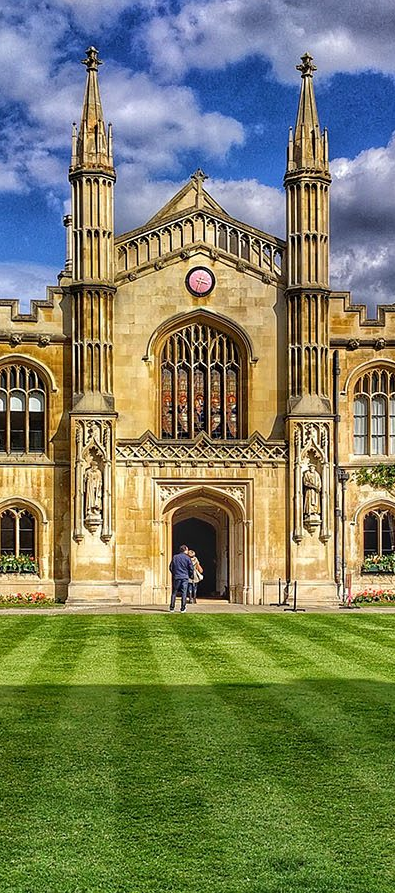
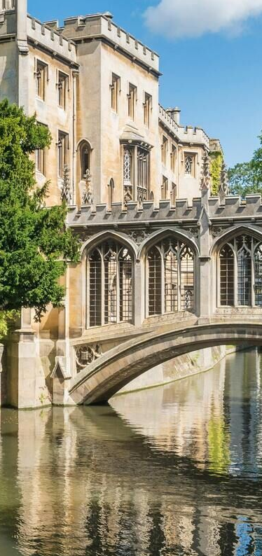
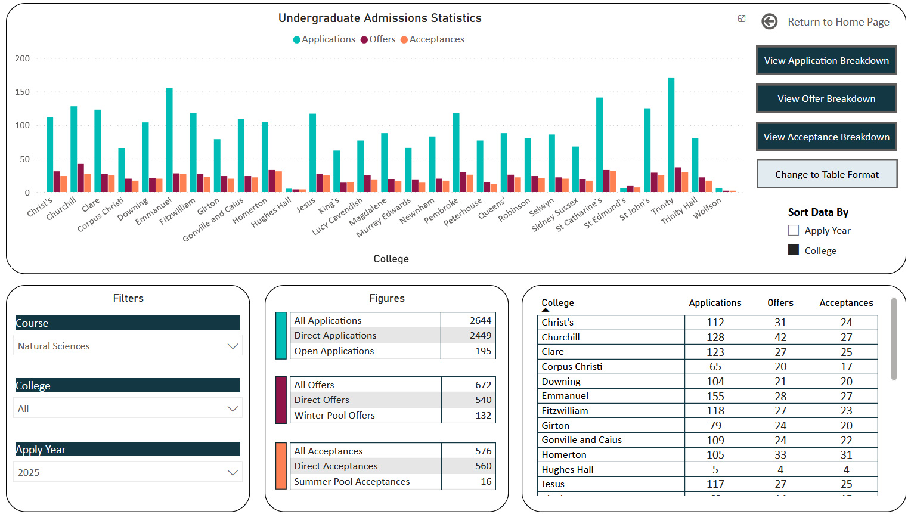
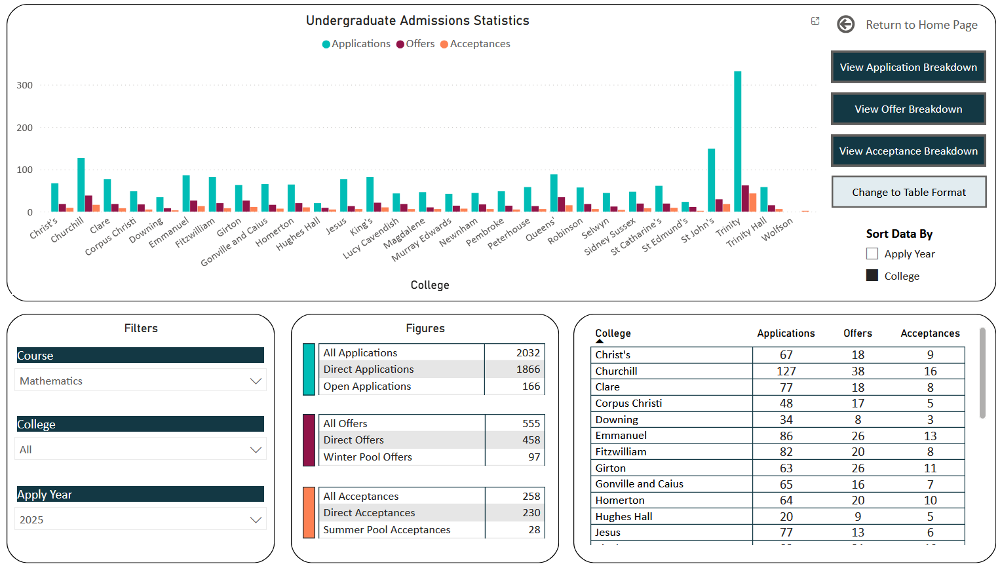
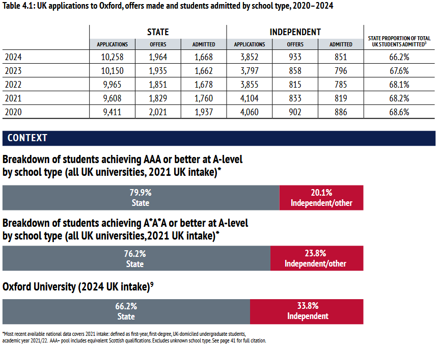
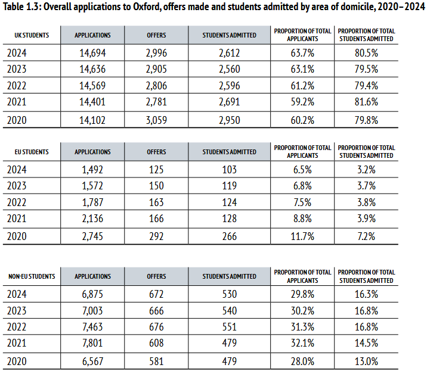
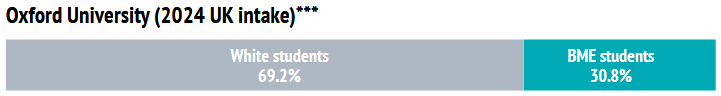
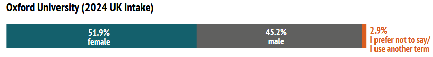
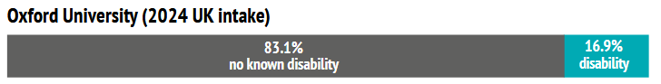
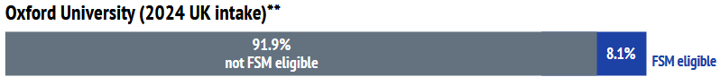

A lot of the data discussed here is from the following two sources:
The universities are obligated to publish this kind of information - it's interesting. Check it out for yourself!
Alright. Here come bits of data and discussion.


Let's briefly interpret the above data, from 2025 Cambridge admissions.
Firstly, the outliers. Trinity has a well earned remarkable reputation for Maths (which leaks into Physics), massive skewing applications. The least popular colleges - Hughes Hall, St Edmund's, and Wolfson - are Postgraduate / Mature Student colleges. We can ignore these. Generally speaking (as an overall trend between colleges for a given subject) there's no crazy differences between the colleges, just slight variations in application rate and offer rate.
Secondly, some courses are definitely more competitive than others (e.g. above: Maths has a 1/8 admission rate compared to 1/5 for Natural Sciences) and it's worth being aware of this when you apply.
Regarding college choice... go and visit them if you get the chance! Size, proximity to city centre / proximity to lecture theatres, and general reputation can all come into play. I went to a tiny college (Corpus Christ). It was cosy and central. Supermarkets were close by but the noise from tourists on the street was immense. In third year I had to bike 15 minutes for my Physics lectures and labs. I picked it effectively at random and absolutely loved it.
My advice would be to choose a subject that you're passionate about, and 2-3 colleges that look and feel cool. Likely as not there will be some small statistical discrepancy, but genuine desire for a subject and a college are extremely noticeable, impactful and impossible to fake in an interview context. For admissions success and your own quality of life, follow this desire!
While we're here, we may as well peek at some other statistics for some clarity regarding where exactly we stand on some demographic features. You may prefer not to look at this!

Around two thirds of UK students at Oxbridge come from state schools - a majority, but relatively lower than the distribution of high achieving students would suggest.
This is not just student preference - averaging across Oxford's 2020-2024 data, the admission rate for state students was 17.6%, and the admission rate for independent school students was 21.0%.
What this tells us is that there's definitely still a skew towards independent education in university admission BEYOND grades or student preference. We could speculate on this until the cows come home - undoubtedly there are a variety of access barriers more likely to impact someone who's applying from a state school. Teachers at independent schools are also more likely to have come from an Oxbridge background themselves, and therefore have relevant wisdom to pass on to their students.
Let's look at the ways some independent schools get ahead, and how a student outside of the system could replicate these:
...I will comment my (very biased and entirely personal) opinion that there is a lot of rubbish advice given to students in ANY school for Oxbridge admission. One of the biggest motivators and enablers of a student to deliver an excellent university application is having talented peers around you who are also applying - this is a major advantage that independent schools have. More of their students are encouraged to apply and feel supported in the process, with mock interview practice or being put in touch with past successful students. If you have a friend who's also applying, fantastic. If not, it might be worth checking out an Oxbridge hosted event or two. Find peers on Reddit or The Student Room to discuss strategy, comment on personal statements or do mock interviews with can help to substitute for a lack of useful teachers!

Averaging out the admission rates from 2020-2024 we get the following:
UK Student Admission Rate: 18.5%
EU Student Admission Rate: 7.4%
Non-EU Student Admission Rate: 7.2%
Like for international/state schools, I won't claim to have all the answers as to why this is the case or tell you that the admission process is an entirely fair system... however I can tell you for sure that the lack of familiarity international schools have with the UK system does play a part in this.
Two things I'll say for international candidates:




Information on ethnicity, gender, disability and disadvantage is also available in the university documents.
Here's a snapshot summary of 2024's data.